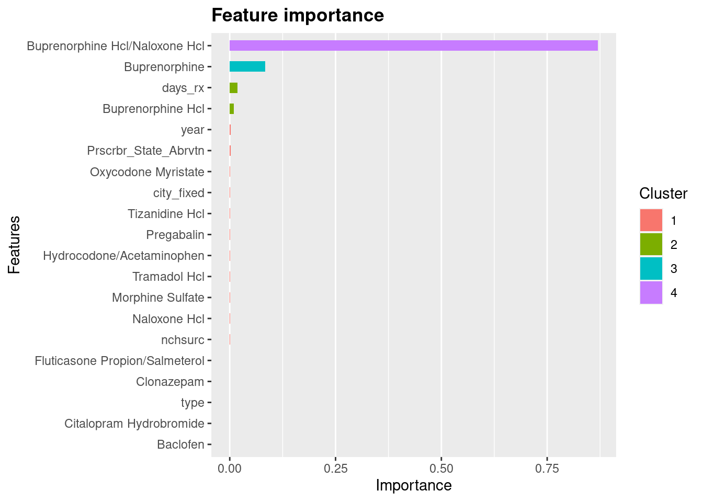

Loading required package: lattice
Attaching package: 'caret'
The following object is masked from 'package:purrr':
lift
Code
library(fst)# library(DiagrammeR) # for plotting XGBoost treeslibrary(Ckmeans.1d.dp)# for xgb.ggplot.importance function# library(ggplot2)# # library(MazamaSpatialUtils)# library(MazamaSpatialPlots)# library(plotly)# library(leaflet)# library(data.table)# library(lubridate)
Overview
We seek to understand the impact of the Comprehensive Addiction and Recovery Act (CARA) of 2016 on patterns of buprenorphine prescribing practices by examining medicare part D data. This exploratory analysis will download and compile medicare part D data before and after the legislation for years 2013-2021, and will examine variables of interest including buprenorphine Rx, methadone Rx, naltrexone Rx, prescriber type, cost to the patient, cost to Medicare, rural vs urban, and more.
Within this section we seek to classify potentially ambiguous entries corresponding to brand names Buprenorphine or Buprenorphine Hcl. There are several methods to consider including logistic regression, however we will attempt to classify these ambiguities according to the Fast Large-scale Almost Matching Exactly (FLAME) algorithm (described here), as implemented in the FLAME package. We can consider matching on several variables:
The set of other medications prescribed, and/or specific high-yield medications (e.g. methadone, naltrexone, naloxone, etc.)
Prescriber’s state or county
Prescriber’s NCHSUR classification
Prescriber’s specialty
Unit drug cost; i.e. Tot_Drug_Cost / Tot_Day_Suply
Classification of Ambiguous Treatments
Loading Data
To uniquely identify each row/observation we will add an id variable. First we will update the treatment variable to reflect ambiguous values (i.e. Brnd_Name is either Buprenorphine or Buprenorphine Hcl), setting the value of tx to bup_ambig:
Code
# Load saved dataload(file ="dataset/data.RData")# add/update variablesdata<-data|># update 'tx' variablemutate(tx =ifelse(Brnd_Name=="Buprenorphine"|Brnd_Name=="Buprenorphine Hcl", "bup_ambig", tx))|># add 'id' variable corresponding to rownumbermutate(id =row_number())|># set 'id' as first variablerelocate(id, .before =1)# check: table tx vs brand name for buprenorphinetable(data$Brnd_Name[data$tx=="bup_oud"|data$tx=="bup_pain"|data$tx=="bup_ambig"],data$tx[data$tx=="bup_oud"|data$tx=="bup_pain"|data$tx=="bup_ambig"])
We can now create a dataset of NPI/year pairs corresponding to prescribers who have prescribed buprenorphine that year. We will use this dataset to extract the other drugs prescribed by these prescribers.
Count number of NPI/year pairs in the providers dataset which have both tx == “bup_oud” and tx == “bup_pain”; these pairs will be less useful for classification.
Code
providers|>group_by(Prscrbr_NPI, year)|>summarise( n =n(), n_oud =sum(tx=="bup_oud"), n_pain =sum(tx=="bup_pain"), .groups ="drop_last")|>filter(n_oud>0&n_pain>0)|>nrow()
[1] 6307
Pivot the providers dataset to wide format such that each row is a unique NPI/year pair with new columns for each treatment bucket (i.e. bup_oud, bup_pain, bup_ambig):
Code
providers_wide<-providers|>pivot_wider( id_cols =c(Prscrbr_NPI, year), names_from =tx, values_from =tx,# should the line below be as follows:# values_fn = function(x) (length(x)/length(x)), values_fn =length, values_fill =0)# examine providers with bup_ambig==1sum(providers_wide$bup_ambig==1)
We can now create a new dataset of observations corresponding to NPI/year pairs corresponding to prescribers who have prescribed buprenorphine that year:
Code
# create data_classification as an empty dataset:data_classification<-data.frame()# iterate over years 2013-2021:for(yearin2013:2021){# load the data:data_year<-read_fst(paste0("data/", year, ".fst"))|># select only necessary variablesselect(Prscrbr_NPI, Brnd_Name, Gnrc_Name)# set the `year` variable:data_year$year<-year# inner join with `providers_wide` dataset to restrict to NPI/year combinations from `providers`:data_year<-inner_join(data_year,providers_wide, by =c("Prscrbr_NPI", "year"), relationship ="many-to-one")# append the data to the `data_classification` dataset:data_classification<-rbind(data_classification, data_year)}# cleanuprm(data_year, year)
We can now widen the data_classification dataset created above such that each row is a unique NPI/year pair with new columns for the generic names of each drug prescribed. First some numbers:
Code
# count the number of distinct generic names in the datasetdata_classification|>select(Gnrc_Name)|>n_distinct()
[1] 1690
Code
# count number of distinct NPI/year pairs in the `providers` datasetproviders|>select(Prscrbr_NPI, year)|>n_distinct()
[1] 154354
Code
# average number of generic names per NPI/year pairnrow(data_classification)/154354
[1] 60.98502
Code
# summing over bup_oud, bup_pain, and bup_ambigsum(data_classification$bup_oud)
Looking again at the most frequently prescribed drugs in the dataset, this time breaking it down by bup_pain and bup_oud:
Code
drug_freq<-data_classification|># exclude unhelpful observations with oud==1 & pain==1 & ambig==0filter(!(bup_oud==1&bup_pain==1&bup_ambig==0))|># exclude observations mapping to bup_ambig, i.e. Brnd_Name is either `Buprenorphine` or `Buprenorphine Hcl`filter(!(Brnd_Name=="Buprenorphine"|Brnd_Name=="Buprenorphine Hcl"))|># compute summary statistics by groupinggroup_by(Gnrc_Name)|>summarise( n_oud =sum(bup_oud), n_pain =sum(bup_pain), n_ambig =sum(bup_ambig), n =n())# display top 100drug_freq|>arrange(desc(n))|>head(100)
Normalize the counts by dividing by the total number of NPI/year pairs in the dataset; then compute a contrast score and weighted contrast score for each drug; the contrast will be the absolute value of the difference between the normalized counts for OUD and pain over the sum of the normalized counts for OUD and pain. The weighted contrast will be the contrast score multiplied by n_ambig:
Code
# calc column totals:N_oud<-sum(drug_freq$n_oud)N_pain<-sum(drug_freq$n_pain)N_ambig<-sum(drug_freq$n_ambig)N<-sum(drug_freq$n)# mutate columns:drug_freq<-drug_freq|># normalize columns:mutate( n_oud =signif(1000*n_oud/N_oud, 3), n_pain =signif(1000*n_pain/N_pain, 3), n_ambig =signif(1000*n_ambig/N_ambig, 3), n =signif(1000*n/N, 3))|># add contrasts columns for OUD vs painmutate( contrast =signif((n_oud-n_pain)/(n_oud+n_pain), 3), w_contrast =signif(n_ambig*(n_oud-n_pain)/(n_oud+n_pain), 3))# display top 100drug_freq|>arrange(desc(abs(w_contrast)))|>head(100)
# sum weighted contrast over top 50 entriesbrnd_freq|>arrange(desc(abs(w_contrast)))|>head(50)|>select(w_contrast)|>sum()
[1] -5.36
Code
# sum absolute value of weighted contrast over top 50 entriesbrnd_freq|>arrange(desc(abs(w_contrast)))|>head(50)|>select(w_contrast)|>abs()|>sum()
[1] 108.98
These values are similar, but have a somewhat lower absolute value. We can assess the top 100 and top 200 brand and generics similarly:
For the generics:
Code
# sum weighted contrast over top 100 entriesdrug_freq|>arrange(desc(abs(w_contrast)))|>head(100)|>select(w_contrast)|>sum()
[1] 17.493
Code
# sum absolute value of weighted contrast over top 100 entriesdrug_freq|>arrange(desc(abs(w_contrast)))|>head(100)|>select(w_contrast)|>abs()|>sum()
[1] 172.107
Code
# sum weighted contrast over top 200 entriesdrug_freq|>arrange(desc(abs(w_contrast)))|>head(200)|>select(w_contrast)|>sum()
[1] 10.998
Code
# sum absolute value of weighted contrast over top 50 entriesdrug_freq|>arrange(desc(abs(w_contrast)))|>head(200)|>select(w_contrast)|>abs()|>sum()
[1] 203.344
For the brands:
Code
# sum weighted contrast over top 50 entriesbrnd_freq|>arrange(desc(abs(w_contrast)))|>head(100)|>select(w_contrast)|>sum()
[1] 18.738
Code
# sum absolute value of weighted contrast over top 50 entriesbrnd_freq|>arrange(desc(abs(w_contrast)))|>head(100)|>select(w_contrast)|>abs()|>sum()
[1] 155.642
Code
# sum weighted contrast over top 50 entriesbrnd_freq|>arrange(desc(abs(w_contrast)))|>head(200)|>select(w_contrast)|>sum()
[1] 21.603
Code
# sum absolute value of weighted contrast over top 50 entriesbrnd_freq|>arrange(desc(abs(w_contrast)))|>head(200)|>select(w_contrast)|>abs()|>sum()
[1] 192.119
The top 100 generic drugs seems like a sweet spot; we will use the generic names for classification of ambiguous observations:
Code
generic_top_100<-drug_freq|>arrange(desc(abs(w_contrast)))|>head(100)|>select(Gnrc_Name)|>pull()# create new dataset from drug_classification with only top 50 generic namesgnrc_100_w<-data_classification|>filter(Gnrc_Name%in%generic_top_100)|># widen the dataset to create new columns for each of the top drugspivot_wider(# including bup_pain, bup_oud, bup_ambig to carry them forward id_cols =c(Prscrbr_NPI, year, bup_pain, bup_oud, bup_ambig), names_from =Gnrc_Name, values_from =Gnrc_Name, values_fn =function(x)(length(x)/length(x)), values_fill =0)
We can now create 100 new variables in the main dataset, data, one for each of the top generic names, which will be 1 if the provider prescribed the medication in the given year, and 0 otherwise; i.e. for each observation in data the NPI/year pair will match with the NPI/year pair in data_classification.
Code
data_gnrc_100<-left_join(data,gnrc_100_w, by =c("Prscrbr_NPI", "year"), relationship ="many-to-one")
Continuous Predictors
Adding other potential predictors including average drug cost per day, average days supply prescribed with summary statistics for unit cost and average days supply by tx:
This preliminary analysis of these potential predictors suggests that average unit cost is not likely a good predictor, as the ambiguous entries are all generic and thus tend to be much cheaper; however days supply of 27 days or fewer could potentially be a good predictor. We will include days supply less than or equal to 27 as a new variable and cleanup the rest:
Prepare a dataset for XGBoost. Using data.matrix and then xgb.DMatrix. Note that for data.matrix, “Logical and factor columns are converted to integers. Character columns are first converted to factors and then to integers.”
Code
# first filtering to relevant observations and intentionally creating a numeric treatment variabledata_xgb<-data_gnrc_100|># filter to only include buprenorphine observationsfilter(tx=="bup_ambig"|tx=="bup_oud"|tx=="bup_pain")|># exclude unhelpful observations with oud==1 & pain==1 & ambig==0filter(!(bup_oud==1&bup_pain==1&bup_ambig==0))|># convert tx variable to numeric: bup_oud = 1, bup_pain = 2, bup_ambig = 3mutate(tx_num =case_when(tx=="bup_oud"~1,tx=="bup_pain"~2,tx=="bup_ambig"~3))# table tx vs tx_num to verify encodingtable(data_xgb$tx, data_xgb$tx_num)
Proceeding to remove variables which will not be matched on and then convert to a matrix:
Code
data_xgb<-data_xgb|># remove variables which will not be matched on (comment out variables to keep)select(-Prscrbr_NPI,-Prscrbr_Last_Org_Name, -Prscrbr_First_Name, -Prscrbr_City, # -Prscrbr_State_Abrvtn, -Prscrbr_State_FIPS, -Prscrbr_Type, -Prscrbr_Type_Src, -Brnd_Name, -Gnrc_Name, -Tot_Clms, -Tot_30day_Fills, -Tot_Day_Suply, -Tot_Drug_Cst, -Tot_Benes, -GE65_Sprsn_Flag, -GE65_Tot_Clms, -GE65_Tot_30day_Fills, -GE65_Tot_Drug_Cst, -GE65_Tot_Day_Suply, -GE65_Bene_Sprsn_Flag, -GE65_Tot_Benes, -MAT_generic, -MAT_brand, -tx, # no longer outcome variable# -year, -county_fips, # -city_fixed, -random_fips, -fips, # -nchsurc, -ur, # -type,-bup_pain,-bup_oud,-bup_ambig,-unit_cst,# -days_rx,-days_27,# -tx_num, # outcome variable-id)
Testing Training & Prediction Sets
Split off the set to be predicted from the testing/training data; and split the remaining data into training/testing sets:
Code
# the data to be predicteddata_xgb.pred<-data_xgb[data_xgb$tx_num==3,]# subset data_xgb to exclude observations to be predicteddata_xgb<-data_xgb[data_xgb$tx_num!=3,]#set the seed with the system timeset.seed(Sys.time())#split the data into training and test sets using carettrainIndex<-createDataPartition(data_xgb$tx_num, p =.8, list =FALSE, times =1)data_xgb.train<-data_xgb[trainIndex,]data_xgb.test<-data_xgb[-trainIndex,]# check sum of rows of the 3 subsets of data_xgbnrow(data_xgb.train)+nrow(data_xgb.test)+nrow(data_xgb.pred)
[1] 242920
Convert data_xgb ane each of the subsets to xgb.DMatrix datatype; this entails defining the outcome variable, removing it from the dataset, and converting to a matrix via data.matrix():
Code
# Training sety.train<-data_xgb.train$tx_num-1# set y.train to tx_num - 1DM.data_xgb.train<-data_xgb.train|>select(-tx_num)|># remove tx_numdata.matrix()|># convert to matrixxgb.DMatrix(label =y.train)# convert to xgb.DMatrix# testing sety.test<-data_xgb.test$tx_num-1# set t.test to tx_num - 1DM.data_xgb.test<-data_xgb.test|>select(-tx_num)|># remove tx_numdata.matrix()|># convert to matrixxgb.DMatrix(label =y.test)# convert to xgb.DMatrix# prediction setDM.data_xgb.ambig<-data_xgb.pred|>select(-tx_num)|># remove tx_numdata.matrix()|># convert to matrixxgb.DMatrix()# convert to xgb.DMatrix# full datasety<-data_xgb$tx_num-1# set y to tx_num - 1DM.data_xgb<-data_xgb|>select(-tx_num)|># remove tx_numdata.matrix()|># convert to matrixxgb.DMatrix(label =y)# convert to xgb.DMatrix
Model Fitting
Now we can specify the parameters for the training of model, and run:
Column 2 ['No'] of item 2 is missing in item 1. Use fill=TRUE to fill with NA (NULL for list columns), or use.names=FALSE to ignore column names. use.names='check' (default from v1.12.2) emits this message and proceeds as if use.names=FALSE for backwards compatibility. See news item 5 in v1.12.2 for options to control this message.
Warning in matrix(pred, ncol = 3, byrow = T): data length [306460] is not a
sub-multiple or multiple of the number of rows [102154]
Code
pclass=apply(pred,1,which.max)mat4<-data_xgb|>select(-tx_num)|># remove tx_numcolnames()|># get column namesxgb.importance(# get importance matrix# feature_names = ., # use column names model =xfit4)# old code:# mat4 = xgb.importance(# feature_names = colnames(data_xgb[,-c("tx_num")]), # don't include tx number# model = xfit4)xgb.ggplot.importance( importance_matrix =mat4, top_n =20)

Tabulation of proportion of prescribers who prescribed bup_ambig who also prescribed a product with generic name “Buprenorphine Hcl/Naloxone Hcl”:
Code
data_gnrc_100|>filter(bup_ambig==1)|>group_by(Prscrbr_NPI, year)|>summarise( n =n(), n_bup_nal =sum(Gnrc_Name=="Buprenorphine Hcl/Naloxone Hcl"), .groups ="drop")|>summarise( N =n(),# number of rows where n_bup_nal > 0 n_bup_nal =sum(n_bup_nal>0),# proportion of rows where n_bup_nal > 0 prop_bup_nal =n_bup_nal/N)
# A tibble: 1 × 3
N n_bup_nal prop_bup_nal
<int> <int> <dbl>
1 48482 25833 0.533
Confusion Matrix
This suggests that bup/naloxone likely is an important predictor for our ambiguous observations. Now we calculate the confusion matrix for xfit4:
Confusion Matrix and Statistics
Reference
Prediction bup_oud bup_pain
bup_oud 29258 561
bup_pain 178 8310
Accuracy : 0.9807
95% CI : (0.9793, 0.9821)
No Information Rate : 0.7684
P-Value [Acc > NIR] : < 2.2e-16
Kappa : 0.945
Mcnemar's Test P-Value : < 2.2e-16
Sensitivity : 0.9940
Specificity : 0.9368
Pos Pred Value : 0.9812
Neg Pred Value : 0.9790
Prevalence : 0.7684
Detection Rate : 0.7638
Detection Prevalence : 0.7784
Balanced Accuracy : 0.9654
'Positive' Class : bup_oud
Prediction for bup_ambig
Code
# use xfit4 model to predict probabilitiespred.ambig<-predict(xfit4,DM.data_xgb.ambig, strict_shape =TRUE)# convert probabilities to labelslabels.ambig<-factor(round(pred.ambig[2,])+1, labels =c("bup_oud", "bup_pain"))# add labels to data_xgb.preddata_xgb.pred$tx_pred<-labels.ambig
# summarize by prescriber typedata_xgb.pred|>group_by(type)|>summarise( n_oud =sum(tx_pred=="bup_oud"), n_pain =sum(tx_pred=="bup_pain"), n =n(), .groups ="drop")
# A tibble: 7 × 4
type n_oud n_pain n
<chr> <int> <int> <int>
1 FP/IM 10603 6590 17193
2 NP 2579 5256 7835
3 Other 3880 5825 9705
4 PA 1111 3185 4296
5 Pain 1797 3800 5597
6 Psych 5416 1303 6719
7 RPh 8 30 38
Merge with original data:
Code
ids<-data$id[data$Brnd_Name=="Buprenorphine"|data$Brnd_Name=="Buprenorphine Hcl"]# add row id numbers back to data_xgb.preddata_xgb.pred$id<-idsdata_xgb.pred_minimal<-data_xgb.pred|>select(id, tx_pred)# merge predicted treatment and bup_pain/bup_oud/Bup_ambig into original datasetdata_pred<-left_join(data,# the first join is with data_xgb.pred_minimal for the predicted treatmentsdata_xgb.pred_minimal, by =join_by("id"=="id"), relationship ="one-to-one")|># the second join is with data_gnrc_100 for the bup_pain/bup_oud/Bup_ambigleft_join(data_gnrc_100[c("id", "bup_pain", "bup_oud", "bup_ambig")], by =join_by("id"=="id"), relationship ="one-to-one")
Examining Predicted Data
Looking at the predictions in relation to several other important variables including NCHSURC, provider type, generic name of buprenorphine prescribed, and other drugs prescribed:
Code
# beginning by joining the predicted data with data_gnrc_100data_gnrc_100<-left_join(data_gnrc_100,data_xgb.pred_minimal, by =join_by("id"=="id"), relationship ="one-to-one")
Tabulate by NCHSURC
Code
# tabulate predicted by NCHSURCdata_gnrc_100|>filter(tx=="bup_ambig")|>group_by(nchsurc, tx_pred)|>summarise( n =n(), .groups ="drop")|>pivot_wider( names_from =tx_pred, values_from =n, values_fill =0)
Sensitivity analyses: - see of the false positives produced by the lower specificity produces any effect on the results - test assumption that providers essentially fall into two groups: those who prescribe buprenorphine for pain and those who prescribe buprenorphine for opioid use disorder
Perhaps the gradient boosting would be improved by:
with the 200 top drugs
using continuous measures for the top drugs instead of binary prescribed vs not prescribed; such measures could include:
‘Tot_Clms’ (total number of claims)
‘Tot_Day_Sup’ (total days supply)
Using calculated continuous measures
average cost
average days supply
Have another go at using the binary:logistic objective, as it should work as well as the multi:softprob objective, as it should work as well as the softprob
---title: "Classification of Ambiguous Treatments"author: "Matthew Hoctor, PharmD"date: "`r format(Sys.time(), '%d %B, %Y')`"quarto::html_document: theme: cerulean highlight: githubtoc: truetoc-depth: 4toc-location: lefttoc-title: Contentscode-fold: showcode-overflow: wrapcode-tools: truecode-link: trueexecute: freeze: autoeditor: source---```{r}#| label: setup#| #| output: false# load libraries:library(tidyverse)# library(FLAME) # not suitable for matching on this datasetlibrary(xgboost)library(caret) #for confusionMatrix functionlibrary(fst)# library(DiagrammeR) # for plotting XGBoost treeslibrary(Ckmeans.1d.dp) # for xgb.ggplot.importance function# library(ggplot2)# # library(MazamaSpatialUtils)# library(MazamaSpatialPlots)# library(plotly)# library(leaflet)# library(data.table)# library(lubridate)```# OverviewWe seek to understand the impact of the Comprehensive Addiction and Recovery Act (CARA) of 2016 on patterns of buprenorphine prescribing practices by examining medicare part D data. This exploratory analysis will download and compile medicare part D data before and after the legislation for years 2013-2021, and will examine variables of interest including buprenorphine Rx, methadone Rx, naltrexone Rx, prescriber type, cost to the patient, cost to Medicare, rural vs urban, and more.Within this section we seek to classify potentially ambiguous entries corresponding to brand names `Buprenorphine` or `Buprenorphine Hcl`. There are several methods to consider including logistic regression, however we will attempt to classify these ambiguities according to the Fast Large-scale Almost Matching Exactly (FLAME) algorithm ([described here](https://arxiv.org/abs/1707.06315)), as implemented in the [FLAME package](https://cran.r-project.org/web/packages/FLAME/). We can consider matching on several variables:- The set of other medications prescribed, and/or specific high-yield medications (e.g. methadone, naltrexone, naloxone, etc.)- Prescriber's state or county- Prescriber's NCHSUR classification- Prescriber's specialty- Unit drug cost; i.e. `Tot_Drug_Cost` / `Tot_Day_Suply`# Classification of Ambiguous Treatments## Loading DataTo uniquely identify each row/observation we will add an `id` variable. First we will update the treatment variable to reflect ambiguous values (i.e. Brnd_Name is either `Buprenorphine` or `Buprenorphine Hcl`), setting the value of `tx` to `bup_ambig`:```{r}# Load saved dataload(file ="dataset/data.RData")# add/update variablesdata <- data |># update 'tx' variablemutate(tx =ifelse(Brnd_Name =="Buprenorphine"| Brnd_Name =="Buprenorphine Hcl", "bup_ambig", tx)) |># add 'id' variable corresponding to rownumbermutate(id =row_number()) |># set 'id' as first variablerelocate(id, .before =1)# check: table tx vs brand name for buprenorphinetable( data$Brnd_Name[data$tx =="bup_oud"| data$tx =="bup_pain"| data$tx =="bup_ambig"], data$tx[data$tx =="bup_oud"| data$tx =="bup_pain"| data$tx =="bup_ambig"])```## Find Classifiers### Prescribing PatternWe can now create a dataset of NPI/year pairs corresponding to prescribers who have prescribed buprenorphine that year. We will use this dataset to extract the other drugs prescribed by these prescribers.```{r}providers <- data |>filter(tx =="bup_oud"| tx =="bup_pain"| data$tx =="bup_ambig") |>select(Prscrbr_NPI, year, tx) |>distinct()```Count number of NPI/year pairs in the `providers` dataset which have both tx == "bup_oud" and tx == "bup_pain"; these pairs will be less useful for classification.```{r}providers |>group_by(Prscrbr_NPI, year) |>summarise(n =n(),n_oud =sum(tx =="bup_oud"),n_pain =sum(tx =="bup_pain"),.groups ="drop_last" ) |>filter(n_oud >0& n_pain >0) |>nrow()```Pivot the `providers` dataset to wide format such that each row is a unique NPI/year pair with new columns for each treatment bucket (i.e. `bup_oud`, `bup_pain`, `bup_ambig`):```{r}providers_wide <- providers |>pivot_wider(id_cols =c(Prscrbr_NPI, year),names_from = tx,values_from = tx,# should the line below be as follows:# values_fn = function(x) (length(x)/length(x)),values_fn = length,values_fill =0 )# examine providers with bup_ambig==1sum(providers_wide$bup_ambig ==1)sum(providers_wide$bup_ambig ==0)sum(providers_wide$bup_ambig ==0& providers_wide$bup_oud ==1& providers_wide$bup_pain ==1)table( providers_wide$bup_oud[providers_wide$bup_ambig ==1], providers_wide$bup_pain[providers_wide$bup_ambig ==1],dnn =c("bup_oud", "bup_pain"))```We can now create a new dataset of observations corresponding to NPI/year pairs corresponding to prescribers who have prescribed buprenorphine that year:```{r}# create data_classification as an empty dataset:data_classification <-data.frame()# iterate over years 2013-2021:for (year in2013:2021) {# load the data: data_year <-read_fst(paste0("data/", year, ".fst") ) |># select only necessary variablesselect(Prscrbr_NPI, Brnd_Name, Gnrc_Name)# set the `year` variable: data_year$year <- year# inner join with `providers_wide` dataset to restrict to NPI/year combinations from `providers`: data_year <-inner_join( data_year, providers_wide, by =c("Prscrbr_NPI", "year"),relationship ="many-to-one" )# append the data to the `data_classification` dataset: data_classification <-rbind(data_classification, data_year)}# cleanuprm(data_year, year) ```We can now widen the `data_classification` dataset created above such that each row is a unique NPI/year pair with new columns for the generic names of each drug prescribed. First some numbers:```{r}# count the number of distinct generic names in the datasetdata_classification |>select(Gnrc_Name) |>n_distinct()# count number of distinct NPI/year pairs in the `providers` datasetproviders |>select(Prscrbr_NPI, year) |>n_distinct()# average number of generic names per NPI/year pairnrow(data_classification)/154354# summing over bup_oud, bup_pain, and bup_ambigsum(data_classification$bup_oud)sum(data_classification$bup_pain)sum(data_classification$bup_ambig)```Looking again at the most frequently prescribed drugs in the dataset, this time breaking it down by bup_pain and bup_oud:```{r}drug_freq <- data_classification |># exclude unhelpful observations with oud==1 & pain==1 & ambig==0filter(!(bup_oud ==1& bup_pain ==1& bup_ambig ==0)) |># exclude observations mapping to bup_ambig, i.e. Brnd_Name is either `Buprenorphine` or `Buprenorphine Hcl`filter(!(Brnd_Name =="Buprenorphine"| Brnd_Name =="Buprenorphine Hcl")) |># compute summary statistics by groupinggroup_by(Gnrc_Name) |>summarise(n_oud =sum(bup_oud),n_pain =sum(bup_pain),n_ambig =sum(bup_ambig),n =n() )# display top 100drug_freq |>arrange(desc(n)) |>head(100)```Normalize the counts by dividing by the total number of NPI/year pairs in the dataset; then compute a contrast score and weighted contrast score for each drug; the contrast will be the absolute value of the difference between the normalized counts for OUD and pain over the sum of the normalized counts for OUD and pain. The weighted contrast will be the contrast score multiplied by n_ambig:```{r}# calc column totals:N_oud <-sum(drug_freq$n_oud)N_pain <-sum(drug_freq$n_pain)N_ambig <-sum(drug_freq$n_ambig)N <-sum(drug_freq$n)# mutate columns:drug_freq <- drug_freq |># normalize columns:mutate(n_oud =signif(1000*n_oud/N_oud, 3),n_pain =signif(1000*n_pain/N_pain, 3),n_ambig =signif(1000*n_ambig/N_ambig, 3),n =signif(1000*n/N, 3) ) |># add contrasts columns for OUD vs painmutate(contrast =signif((n_oud-n_pain)/(n_oud+n_pain), 3),w_contrast =signif(n_ambig*(n_oud-n_pain)/(n_oud+n_pain), 3) )# display top 100drug_freq |>arrange(desc(abs(w_contrast))) |>head(100)```Assess the contrasts:```{r}# sum weighted contrast over top 50 entriesdrug_freq |>arrange(desc(abs(w_contrast))) |>head(50) |>select(w_contrast) |>sum()# sum absolute value of weighted contrast over top 50 entriesdrug_freq |>arrange(desc(abs(w_contrast))) |>head(50) |>select(w_contrast) |>abs() |>sum()```This relatively low value suggests that the top 50 generic names are not more sensitive to OUD or to pain.Repeating the above analysis for Brand Name:```{r}brnd_freq <- data_classification |># exclude unhelpful observations with oud==1 & pain==1 & ambig==0filter(!(bup_oud ==1& bup_pain ==1& bup_ambig ==0)) |># exclude observations mapping to bup_ambig, i.e. Brnd_Name is either `Buprenorphine` or `Buprenorphine Hcl`filter(!(Brnd_Name =="Buprenorphine"| Brnd_Name =="Buprenorphine Hcl")) |># compute summary statistics by groupinggroup_by(Brnd_Name) |>summarise(n_oud =sum(bup_oud),n_pain =sum(bup_pain),n_ambig =sum(bup_ambig),n =n() )# calc column totals:N_oud <-sum(brnd_freq$n_oud)N_pain <-sum(brnd_freq$n_pain)N_ambig <-sum(brnd_freq$n_ambig)N <-sum(brnd_freq$n)# mutate columns:brnd_freq <- brnd_freq |># normalize columns:mutate(n_oud =signif(1000*n_oud/N_oud, 3),n_pain =signif(1000*n_pain/N_pain, 3),n_ambig =signif(1000*n_ambig/N_ambig, 3),n =signif(1000*n/N, 3) ) |># add contrasts columns for OUD vs painmutate(contrast =signif((n_oud-n_pain)/(n_oud+n_pain), 3),w_contrast =signif(n_ambig*(n_oud-n_pain)/(n_oud+n_pain), 3) )# display top 100brnd_freq |>arrange(desc(abs(w_contrast))) |>head(100)```Assess the contrasts:```{r}# sum weighted contrast over top 50 entriesbrnd_freq |>arrange(desc(abs(w_contrast))) |>head(50) |>select(w_contrast) |>sum()# sum absolute value of weighted contrast over top 50 entriesbrnd_freq |>arrange(desc(abs(w_contrast))) |>head(50) |>select(w_contrast) |>abs() |>sum()```These values are similar, but have a somewhat lower absolute value. We can assess the top 100 and top 200 brand and generics similarly:For the generics:```{r}# sum weighted contrast over top 100 entriesdrug_freq |>arrange(desc(abs(w_contrast))) |>head(100) |>select(w_contrast) |>sum()# sum absolute value of weighted contrast over top 100 entriesdrug_freq |>arrange(desc(abs(w_contrast))) |>head(100) |>select(w_contrast) |>abs() |>sum()# sum weighted contrast over top 200 entriesdrug_freq |>arrange(desc(abs(w_contrast))) |>head(200) |>select(w_contrast) |>sum()# sum absolute value of weighted contrast over top 50 entriesdrug_freq |>arrange(desc(abs(w_contrast))) |>head(200) |>select(w_contrast) |>abs() |>sum()```For the brands:```{r}# sum weighted contrast over top 50 entriesbrnd_freq |>arrange(desc(abs(w_contrast))) |>head(100) |>select(w_contrast) |>sum()# sum absolute value of weighted contrast over top 50 entriesbrnd_freq |>arrange(desc(abs(w_contrast))) |>head(100) |>select(w_contrast) |>abs() |>sum()# sum weighted contrast over top 50 entriesbrnd_freq |>arrange(desc(abs(w_contrast))) |>head(200) |>select(w_contrast) |>sum()# sum absolute value of weighted contrast over top 50 entriesbrnd_freq |>arrange(desc(abs(w_contrast))) |>head(200) |>select(w_contrast) |>abs() |>sum()```The top 100 generic drugs seems like a sweet spot; we will use the generic names for classification of ambiguous observations:```{r}generic_top_100 <- drug_freq |>arrange(desc(abs(w_contrast))) |>head(100) |>select(Gnrc_Name) |>pull()# create new dataset from drug_classification with only top 50 generic namesgnrc_100_w <- data_classification |>filter(Gnrc_Name %in% generic_top_100) |># widen the dataset to create new columns for each of the top drugspivot_wider(# including bup_pain, bup_oud, bup_ambig to carry them forwardid_cols =c(Prscrbr_NPI, year, bup_pain, bup_oud, bup_ambig),names_from = Gnrc_Name,values_from = Gnrc_Name,values_fn =function(x) (length(x)/length(x)),values_fill =0 )```We can now create 100 new variables in the main dataset, `data`, one for each of the top generic names, which will be 1 if the provider prescribed the medication in the given year, and 0 otherwise; i.e. for each observation in `data` the NPI/year pair will match with the NPI/year pair in data_classification.```{r}data_gnrc_100 <-left_join( data, gnrc_100_w,by =c("Prscrbr_NPI", "year"),relationship ="many-to-one")```### Continuous PredictorsAdding other potential predictors including average drug cost per day, average days supply prescribed with summary statistics for unit cost and average days supply by tx:```{r}data_gnrc_100$unit_cst <- data_gnrc_100$Tot_Drug_Cst/data_gnrc_100$Tot_Day_Suplydata_gnrc_100$days_rx <- data_gnrc_100$Tot_Day_Suply/data_gnrc_100$Tot_Clms# summary statisticsdata_gnrc_100 |>filter(tx =="bup_ambig"| tx =="bup_oud"| tx =="bup_pain") |>group_by(tx) |>summarise(avg_unit_cst =mean(unit_cst),IQR_unit_cst =IQR(unit_cst),avg_days_rx =mean(days_rx),IQR_days_rx =IQR(days_rx) )# Summary statistics for 'Buprenorphine Hcl' and 'Buprenorphine' separatelydata_gnrc_100 |>filter(Brnd_Name =="Buprenorphine Hcl"| Brnd_Name =="Buprenorphine") |>group_by(Brnd_Name) |>summarise(avg_unit_cst =mean(unit_cst),IQR_unit_cst =IQR(unit_cst),avg_days_rx =mean(days_rx),IQR_days_rx =IQR(days_rx) )# plot histogram days supply by txdata_gnrc_100 |>filter(tx =="bup_ambig"| tx =="bup_oud"| tx =="bup_pain") |>ggplot(aes(x = days_rx, fill = tx)) +geom_histogram(binwidth =1) +# scale x axis to 0-45scale_x_continuous(limits =c(0, 45)) +facet_wrap(~tx, scales ="free") +theme_minimal()# plot histogram unit cost by txdata_gnrc_100 |>filter(tx =="bup_ambig"| tx =="bup_oud"| tx =="bup_pain") |>ggplot(aes(x = unit_cst, fill = tx)) +geom_histogram(binwidth =1) +# scale x axis to 0-45scale_x_continuous(limits =c(0, 45)) +facet_wrap(~tx, scales ="free") +theme_minimal()# plot histogram unit cost by brnd for all bup_ambigdata_gnrc_100 |>filter(tx =="bup_ambig") |>ggplot(aes(x = unit_cst, fill = Brnd_Name)) +geom_histogram(binwidth =1) +# scale x axis to 0-45scale_x_continuous(limits =c(0, 45)) +facet_wrap(~Brnd_Name, scales ="free") +theme_minimal()# plot histogram unit cost by brnd for all bup_ouddata_gnrc_100 |>filter(tx =="bup_oud") |>ggplot(aes(x = unit_cst, fill = Brnd_Name)) +geom_histogram(binwidth =1) +# scale x axis to 0-45scale_x_continuous(limits =c(0, 45)) +facet_wrap(~Brnd_Name, scales ="free") +theme_minimal()```This preliminary analysis of these potential predictors suggests that average unit cost is not likely a good predictor, as the ambiguous entries are all generic and thus tend to be much cheaper; however days supply of 27 days or fewer could potentially be a good predictor. We will include days supply less than or equal to 27 as a new variable and cleanup the rest:```{r}data_gnrc_100$days_27 <-ifelse( data_gnrc_100$days_rx <=27, 1, 0)```## XGBoost### Dataset PreparationPrepare a dataset for XGBoost. Using `data.matrix` and then `xgb.DMatrix`. Note that for `data.matrix`, "Logical and factor columns are converted to integers. Character columns are first converted to factors and then to integers."```{r}# first filtering to relevant observations and intentionally creating a numeric treatment variabledata_xgb <- data_gnrc_100 |># filter to only include buprenorphine observationsfilter(tx =="bup_ambig"| tx =="bup_oud"| tx =="bup_pain") |># exclude unhelpful observations with oud==1 & pain==1 & ambig==0filter(!(bup_oud ==1& bup_pain ==1& bup_ambig ==0)) |># convert tx variable to numeric: bup_oud = 1, bup_pain = 2, bup_ambig = 3mutate(tx_num =case_when( tx =="bup_oud"~1, tx =="bup_pain"~2, tx =="bup_ambig"~3 ))# table tx vs tx_num to verify encodingtable(data_xgb$tx, data_xgb$tx_num)```Proceeding to remove variables which will not be matched on and then convert to a matrix:```{r}data_xgb <- data_xgb |># remove variables which will not be matched on (comment out variables to keep)select(-Prscrbr_NPI,-Prscrbr_Last_Org_Name, -Prscrbr_First_Name, -Prscrbr_City, # -Prscrbr_State_Abrvtn, -Prscrbr_State_FIPS, -Prscrbr_Type, -Prscrbr_Type_Src, -Brnd_Name, -Gnrc_Name, -Tot_Clms, -Tot_30day_Fills, -Tot_Day_Suply, -Tot_Drug_Cst, -Tot_Benes, -GE65_Sprsn_Flag, -GE65_Tot_Clms, -GE65_Tot_30day_Fills, -GE65_Tot_Drug_Cst, -GE65_Tot_Day_Suply, -GE65_Bene_Sprsn_Flag, -GE65_Tot_Benes, -MAT_generic, -MAT_brand, -tx, # no longer outcome variable# -year, -county_fips, # -city_fixed, -random_fips, -fips, # -nchsurc, -ur, # -type,-bup_pain,-bup_oud,-bup_ambig,-unit_cst,# -days_rx,-days_27,# -tx_num, # outcome variable-id )```### Testing Training & Prediction SetsSplit off the set to be predicted from the testing/training data; and split the remaining data into training/testing sets:```{r}# the data to be predicteddata_xgb.pred <- data_xgb[data_xgb$tx_num ==3,]# subset data_xgb to exclude observations to be predicteddata_xgb <- data_xgb[data_xgb$tx_num !=3,]#set the seed with the system timeset.seed(Sys.time())#split the data into training and test sets using carettrainIndex <-createDataPartition( data_xgb$tx_num, p = .8, list =FALSE, times =1)data_xgb.train <- data_xgb[ trainIndex,]data_xgb.test <- data_xgb[-trainIndex,]# check sum of rows of the 3 subsets of data_xgbnrow(data_xgb.train)+nrow(data_xgb.test)+nrow(data_xgb.pred)```Convert data_xgb ane each of the subsets to `xgb.DMatrix` datatype; this entails defining the outcome variable, removing it from the dataset, and converting to a matrix via `data.matrix()`:```{r}# Training sety.train <- data_xgb.train$tx_num-1# set y.train to tx_num - 1DM.data_xgb.train <- data_xgb.train |>select(-tx_num) |># remove tx_numdata.matrix() |># convert to matrixxgb.DMatrix(label = y.train) # convert to xgb.DMatrix# testing sety.test <- data_xgb.test$tx_num-1# set t.test to tx_num - 1DM.data_xgb.test <- data_xgb.test |>select(-tx_num) |># remove tx_numdata.matrix() |># convert to matrixxgb.DMatrix(label = y.test) # convert to xgb.DMatrix# prediction setDM.data_xgb.ambig <- data_xgb.pred |>select(-tx_num) |># remove tx_numdata.matrix() |># convert to matrixxgb.DMatrix() # convert to xgb.DMatrix# full datasety <- data_xgb$tx_num-1# set y to tx_num - 1DM.data_xgb <- data_xgb |>select(-tx_num) |># remove tx_numdata.matrix() |># convert to matrixxgb.DMatrix(label = y) # convert to xgb.DMatrix```### Model FittingNow we can specify the parameters for the training of model, and run:```{r}# watchlist <- list(# train = DM.data_xgb.train, # test = DM.data_xgb.test)# params <- list(# objective = "binary:logistic")param <-list("objective"="multi:softprob","num_class"=2)xfit1 <-xgb.cv(params = param,data = DM.data_xgb,nrounds =10,nfold =5,prediction =TRUE,stratified =TRUE,train_folds = trainIndex,verbose =TRUE)``````{r}print(xfit1)``````{r}param <-list("objective"="multi:softprob","num_class"=2)watchlist <-list(train = DM.data_xgb.train, eval = DM.data_xgb.test)xfit2 <- xgboost::xgboost(param = param, data = DM.data_xgb.train, nrounds=3)xfit3 <-xgb.train(param = param, data = DM.data_xgb.train, nrounds=100,watchlist = watchlist)```Overfitting seems to set in after \~30 iterations, so let's create another model with 30 iterations:```{r}xfit4 <-xgb.train(param = param, data = DM.data_xgb.train, nrounds=30,watchlist = watchlist)``````{r}print(xfit4)``````{r}xgb.plot.multi.trees(model = xfit4)``````{r}pred =predict( xfit4, DM.data_xgb.train)pred =matrix(pred,ncol=3,byrow=T)pclass =apply(pred,1,which.max)mat4 <- data_xgb |>select(-tx_num) |># remove tx_numcolnames() |># get column namesxgb.importance( # get importance matrix# feature_names = ., # use column namesmodel = xfit4)# old code:# mat4 = xgb.importance(# feature_names = colnames(data_xgb[,-c("tx_num")]), # don't include tx number# model = xfit4)xgb.ggplot.importance(importance_matrix = mat4,top_n =20)```Tabulation of proportion of prescribers who prescribed bup_ambig who also prescribed a product with generic name "Buprenorphine Hcl/Naloxone Hcl":```{r}data_gnrc_100 |>filter(bup_ambig ==1) |>group_by(Prscrbr_NPI, year) |>summarise(n =n(),n_bup_nal =sum(Gnrc_Name =="Buprenorphine Hcl/Naloxone Hcl"),.groups ="drop") |>summarise(N =n(),# number of rows where n_bup_nal > 0n_bup_nal =sum(n_bup_nal >0),# proportion of rows where n_bup_nal > 0prop_bup_nal = n_bup_nal/N)```### Confusion MatrixThis suggests that bup/naloxone likely is an important predictor for our ambiguous observations. Now we calculate the confusion matrix for xfit4:```{r}pred.test <-predict( xfit4, DM.data_xgb.test,strict_shape =TRUE)pred_labels <-factor(round( pred.test[2,])+1, labels =c("bup_oud", "bup_pain"))test_labels <-factor( data_xgb.test$tx_num,labels =c("bup_oud", "bup_pain"))confusionMatrix( pred_labels, test_labels )```# Prediction for bup_ambig```{r}# use xfit4 model to predict probabilitiespred.ambig <-predict( xfit4, DM.data_xgb.ambig,strict_shape =TRUE)# convert probabilities to labelslabels.ambig <-factor(round(pred.ambig[2,])+1, labels =c("bup_oud", "bup_pain"))# add labels to data_xgb.preddata_xgb.pred$tx_pred <- labels.ambig```Tabulate some results:```{r}data_xgb.pred |>group_by(tx_pred) |>summarise(n =n(),.groups ="drop")# summarize by yeardata_xgb.pred |>group_by(year) |>summarise(n_oud =sum(tx_pred =="bup_oud"),n_pain =sum(tx_pred =="bup_pain"),n =n(),.groups ="drop")# summarize by prescriber typedata_xgb.pred |>group_by(type) |>summarise(n_oud =sum(tx_pred =="bup_oud"),n_pain =sum(tx_pred =="bup_pain"),n =n(),.groups ="drop")```Merge with original data:```{r}ids <- data$id[data$Brnd_Name =="Buprenorphine"|data$Brnd_Name =="Buprenorphine Hcl"]# add row id numbers back to data_xgb.preddata_xgb.pred$id <- idsdata_xgb.pred_minimal <- data_xgb.pred |>select(id, tx_pred)# merge predicted treatment and bup_pain/bup_oud/Bup_ambig into original datasetdata_pred <-left_join( data,# the first join is with data_xgb.pred_minimal for the predicted treatments data_xgb.pred_minimal,by =join_by("id"=="id"),relationship ="one-to-one") |># the second join is with data_gnrc_100 for the bup_pain/bup_oud/Bup_ambigleft_join( data_gnrc_100[c("id", "bup_pain", "bup_oud", "bup_ambig")],by =join_by("id"=="id"),relationship ="one-to-one")```# Examining Predicted DataLooking at the predictions in relation to several other important variables including NCHSURC, provider type, generic name of buprenorphine prescribed, and other drugs prescribed:```{r}# beginning by joining the predicted data with data_gnrc_100data_gnrc_100 <-left_join( data_gnrc_100, data_xgb.pred_minimal,by =join_by("id"=="id"),relationship ="one-to-one")```## Tabulate by NCHSURC```{r}# tabulate predicted by NCHSURCdata_gnrc_100 |>filter(tx =="bup_ambig") |>group_by(nchsurc, tx_pred) |>summarise(n =n(),.groups ="drop") |>pivot_wider(names_from = tx_pred,values_from = n,values_fill =0)```## Tabulate by provider type```{r}# tabulate predicted by typedata_gnrc_100 |>filter(tx =="bup_ambig") |>group_by(type, tx_pred) |>summarise(n =n(),.groups ="drop") |>pivot_wider(names_from = tx_pred,values_from = n,values_fill =0)```## Tabulate by generic name```{r}# tabulate predicted by generic namedata_gnrc_100 |>filter(tx =="bup_ambig") |>group_by(Gnrc_Name, tx_pred) |>summarise(n =n(),.groups ="drop") |>pivot_wider(names_from = tx_pred,values_from = n,values_fill =0)```## Tabulate by days_27```{r}# tabulate by days_27data_gnrc_100 |>filter(tx =="bup_ambig") |>group_by(days_27, tx_pred) |>summarise(n =n(),.groups ="drop") |>pivot_wider(names_from = tx_pred,values_from = n,values_fill =0)```## Tabulate by "Buprenorphine Hcl/Naloxone Hcl"```{r}# tabulate by "Buprenorphine Hcl/Naloxone Hcl"data_gnrc_100 |>filter(tx =="bup_ambig") |>group_by(`Buprenorphine Hcl/Naloxone Hcl`, tx_pred) |>summarise(n =n(),.groups ="drop") |>pivot_wider(names_from = tx_pred,values_from = n,values_fill =0)```## Tabulate by year```{r}# tabulate by yeardata_gnrc_100 |>filter(tx =="bup_ambig") |>group_by(year, tx_pred) |>summarise(n =n(),.groups ="drop") |>pivot_wider(names_from = tx_pred,values_from = n,values_fill =0)```## Tabulate by NP/PA Rx by year```{r}# tabulate NP/PA Rx by yeardata_gnrc_100 |>filter(tx =="bup_ambig") |>filter(type =="NP"| type =="PA") |>group_by(year, tx_pred) |>summarise(n =n(),.groups ="drop") |>pivot_wider(names_from = tx_pred,values_from = n,values_fill =0)```# CleanupSave the dataset:```{r}save(data_pred, file ="dataset/data_pred.RData")```Cleanup:```{r}# rm(brnd_freq, drug_freq, gnrc_100_w, providers, providers_wide, generic_top_100, N, N_ambig, N_oud, N_pain)``````{r}# rm(data_classification, data_gnrc_100, data_xgb, data_xgb.pred, data_xgb.pred_minimal, data_xgb.test, data_xgb.train, M.data_xgb.test, M.data_xgb.train, N, oj, param, params, pred, pred.ambig, pred.test, trainIndex, watchlist, xfit0, xfit1, xfit2, xfit3, DM.data_xgb, DM.data_xgb.ambig, DM.data_xgb.test, DM.data_xgb.train, labels.ambig, pclass, pred_labels, test_labels, y, y.test, y.train)```# Other Thoughts**Sensitivity analyses**: - see of the false positives produced by the lower specificity produces any effect on the results - test assumption that providers essentially fall into two groups: those who prescribe buprenorphine for pain and those who prescribe buprenorphine for opioid use disorderPerhaps the gradient boosting would be improved by:- with the 200 top drugs- using continuous measures for the top drugs instead of binary prescribed vs not prescribed; such measures could include: - 'Tot_Clms' (total number of claims) - 'Tot_Day_Sup' (total days supply)- Using calculated continuous measures - average cost - average days supply- Have another go at using the `binary:logistic` objective, as it should work as well as the `multi:softprob` objective, as it should work as well as the softprob - Have another go at cross-validationFuture work could include:- Gradient boosting with `catboost` package# Session Info```{r}sessionInfo()```